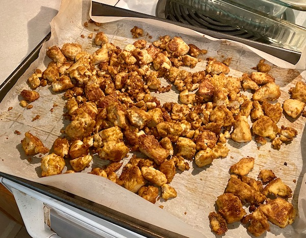

Baked Tofu Bites

Description
If you're new to tofu, I recommend you start here. I went from not really liking tofu that much to trying not to eat a pound of it at one sitting. These are great hot or cold, as a snack or as part of a meal (try them on pasta!). And it's easy! This recipe was originally posted at It Doesn't Taste Like Chicken.
Ingredients:
- 1/3 cup nutritional yeast
- 2 tbsp olive oil
- 2 tbsp soy sauce
- 1 tsp garlic powder
- 1 tsp italian seasoning
- 2 blocks extra firm tofu
Directions:
- Preheat oven to 375 degrees fahrenheit. Line 2 baking sheets with parchment paper.
- In a large bowl, mix all ingredients except the tofu. Break the tofu into chunks with your hand, adding to bowl as you go. Toss tofu to cover with mixture evenly.
- Spread tofu evenly on the baking sheets and bake for 30 minutes or until golden brown, stirring occasionally.